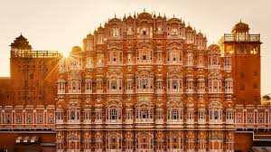
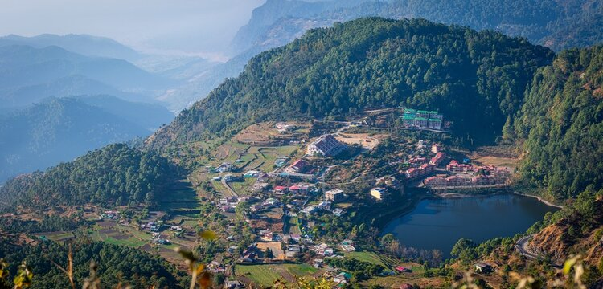
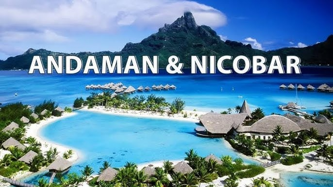

Kerala

Kerala, also known as "God's Own Country," is famous for its lush green landscapes, backwaters, and tranquil beaches. It's a perfect place for relaxation and rejuvenation.
Kashmir

Kashmir, known for its stunning landscapes, is a must-visit destination for nature lovers. From its beautiful lakes to the snow-capped mountains, Kashmir offers breathtaking views and a peaceful retreat.
Paris

Paris, the City of Light, is renowned for its art, culture, and iconic landmarks like the Eiffel Tower. Whether you're interested in museums, fine dining, or shopping, Paris has something for everyone.
Ladakh

Ladakh, located in the northernmost region of India, is known for its stunning high-altitude deserts, monasteries, and vibrant culture. It's a haven for adventure seekers and peace enthusiasts alike.
Nepal

Nepal is the country of the Mount Everest, the highest mountain peak in the world, and the Birthplace of Gautama Buddha- Lumbini. Mountaineering and other types of adventure tourism and ecotourism are important attractions for visitors.
Jaipur
Jaipur is sometimes called the “pink city” because many of its buildings are rose colored. Jaipur is a walled city almost completely surrounded by hills. Among its chief buildings are the City Palace, Hawa Mahal (Hall of Winds), Ram Bagh palace, and the Nahargarh and Jaigarh forts.
Nainital
Nainital, the charming Himalayan lake town, is a picture-postcard perfect hill-station and one of the most popular in Northern India. Commonly known as the 'Lake District', Nainital is nestled high up in the Kumaon Himalayas at an altitude of around 2,000 m above sea level.
Andaman
Every year many people plan a vacation to the sandy beaches of Andaman in search of solitude, natural beauty and adventure but very few are aware that the Andaman Islands are known as the paradise of Birds.